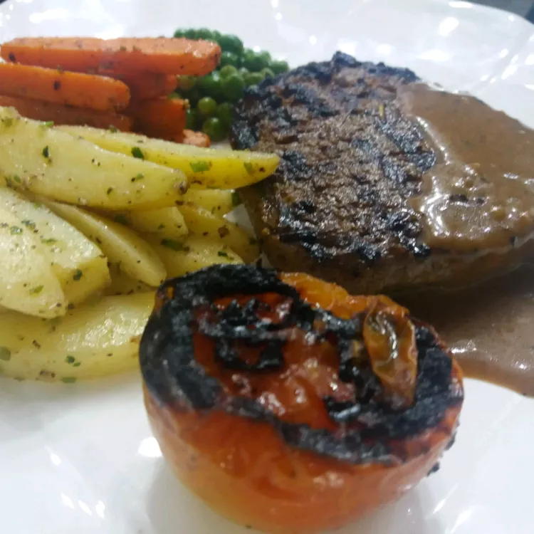

Beef Pepper Steak

Description
Ingredients
- 12 black peppercorns, coarsely ground
- 2 tablespoons tamari
- 1 clove garlic, minced
- 1 pinch white sugar
- 1 pinch salt
- 10 ounces beef filet
- 2 tablespoons butter
Steps
- In a small, nonporous bowl, combine the peppercorns, tamari, garlic, sugar and salt. Add the beef filet and coat well on all sides. Cover and marinate in the refrigerator for 1 hour.
- Melt butter in a medium saucepan over medium high heat. Place the beef filet in the pan and saute for 6 to 8 minutes per side, or until internal temperature reaches at least 145 degrees F (65 degrees C).